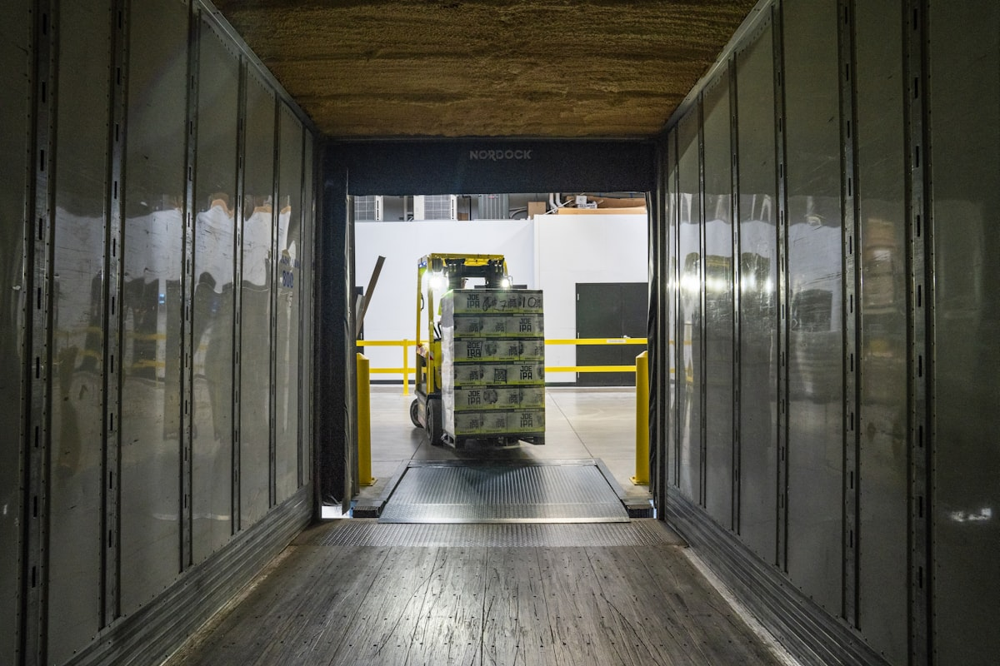

You want the outsourcing decision to suit how you actually operate. The wrong call gets expensive fast: a provider that underprices the labour, a contract you cannot get out of, a service level that drops in your first peak.
The job is to buy the right scope, on terms that hold, from a provider who can run your volumes day to day, not just win the tender.
LCA Savills is an independent logistics outsourcing consultant working across Asia. We run the full sequence with you, from needs assessment to a steady operation, and no provider funds the recommendation you act on.

Decide what you are outsourcing before you run a tender
The real question is what you are buying, not who is cheapest. Plenty of companies outsource transport and keep the warehouse in-house; plenty do the reverse.
Some volumes and service profiles do not suit a shared-user 3PL at all, so a dedicated site makes more sense. Shared-user means you share space, labour and equipment with other shippers. Dedicated means a site run only for you.
We map your network, volumes and service requirements against your cost base first. Skip that and every quote answers the wrong question.
A single regional rate rarely survives contact with the floor
Where you outsource changes what a sensible rate looks like. In Southern Malaysia you weigh mature warehouse stock against tighter labour supply; in other parts of Malaysia the land and cost picture reads differently again.
We build these market realities into the brief and cost model.
Stuck in a failing relationship? The contract could be the problem
When cost, service or trust has broken down, we come in as the independent party and work out what is actually wrong. It is often the contract rather than the operation. We help reduce your cost by helping reduce the costs of your supplier.
On one engagement the provider was hitting every SLA in the agreement, yet the client was still losing customers, because the SLAs measured the wrong things. The fix was a renegotiation and a KPI rewrite, not a re-tender.
Sometimes the answer is a managed exit and a fresh selection. Either way we represent you in the room, with the cost and service data to back what we ask for.
How we work
- Define the scope — What you outsource, and what good service looks like.
- Build the brief — Map network, volumes and service levels into a single comparable brief.
- Run the tender — Issue the RFP and run a structured process to a fixed timeline.
- Design the cost model — Structure bids so they are comparable, not just cheap on the surface.
- Shortlist on evidence — Live site visits and reference checks with operators who have run a peak.
- Negotiate the contract — Lock scope, pricing, KPIs and the exit clause before signature.
- Run the transition — Plan cutover, then govern performance after go-live.
3PL Selection options compared
| Model | Tends to win when | Watch out for |
|---|---|---|
| Shared-user 3PL | Variable volumes, seasonal peaks, multi-client cost sharing | Less control over space and labour priority during peaks |
| Dedicated 3PL | Stable high volumes, specific compliance or brand requirements | Higher fixed cost; you may pay for capacity you do not always fill |
| In-house | Full control needed, proprietary processes, high volume density | Capital investment, recruitment and retention, technology risk |
Results from this work
| Metric | Result | Context |
|---|---|---|
| Service level improvement | 24% | At no extra cost for a beverage manufacturer |
Related services: Warehousing, End to End, Transport & Last Mile
Frequently asked questions
Tell us where you are starting from and what you need.
We will tell you straight what we would do.
Talk to us about your 3PL